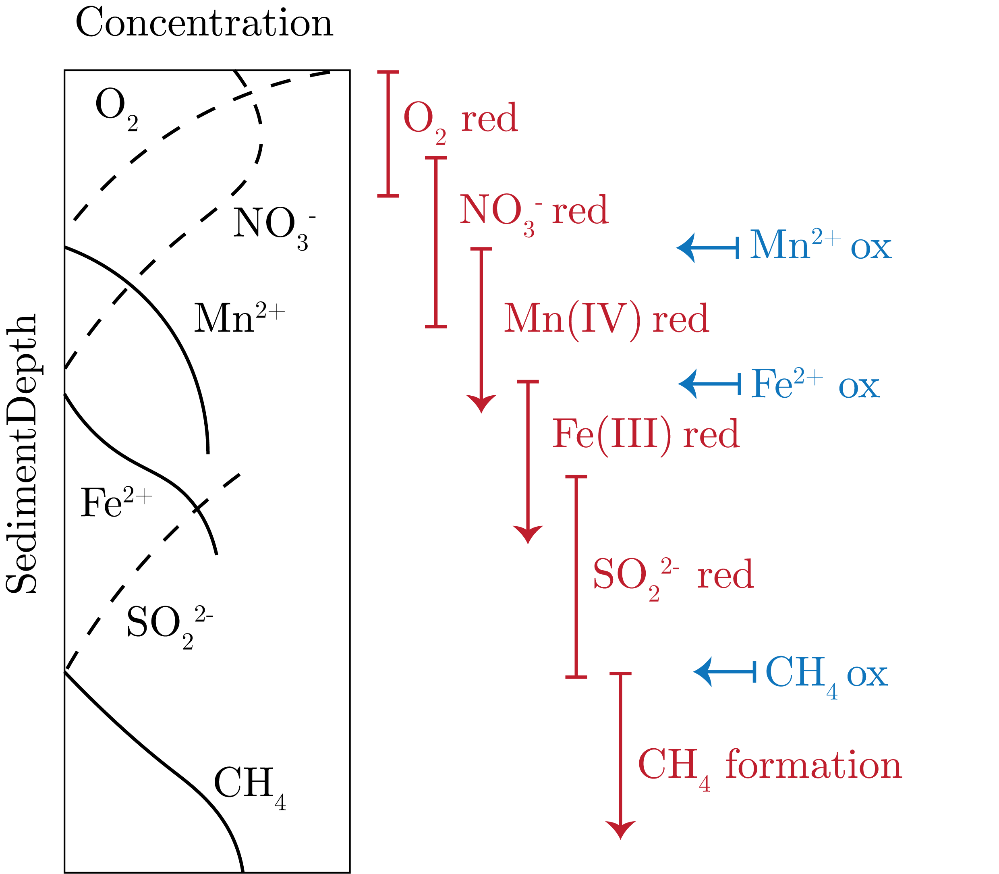

In these regions we have that they are oxygen limited, meaning that there is still enough carbon to perform respiration but not enough oxygen.
Therefore, there needs to be other methods of metabolism.
Denitrification
One of these is denitrification, given by (unbalanced):
\begin{equation}
\text{CH}_2\text{O} + \text{NO}_3 \to \text{CO}_2 + \text{N}_2 + \text{H}_2\text{O},
\end{equation}
in which nitrate is being used as an electron acceptor for carbon reduction to form $\text{CO}_2$, from which energy is gained to grow.
Free Energy
To quantify the energy yield, we use Gibbs Free Energy, the chemical energy to do work:
\begin{equation}
\Delta G ^0 = \Delta G_{products}^0 - \Delta G_{reactants}^0 = 0,
\end{equation}
at steady state. The "0" is a reference states of 0$^\circ$, 1 [atm].
For natural chemistry, we then define "0'", in which we just include $pH = 7$ in the standard state.
An Example
Let's consider 2 redox half-reactions:
\begin{align}
\text{Oxidation: } \text{CH}_2\text{O} + \text{H}_2\text{O} &\to \text{CO}_2 + 4\text{H}^{+} + 4\text{e}^- \quad \Delta G^{0'} = -28.2 \: [\text{kJ mol}^{-1}], \\
\text{Reduction: } \text{O}_2 + 4\text{H}^{+} + 4\text{e}^- &\to 2\text{H}_2\text{O} \quad \Delta G^{0'} = -478 \: [\text{kJ mol}^{-1}].
\end{align}
If we sum these up we get:
\begin{equation}
\text{CH}_2\text{O} + \text{O}_2 \to \text{CO}_2 + \text{H}_2\text{O} \quad \Delta G^{0'} = -506 \: [\text{kJ mol}^{-1}].
\end{equation}
This is thermodynamics, of course, so this is really the theoretical maximum energy yield
However, there can be:
losses to heat
intermediate formation along pathway
non-steady state conditions
Now, what are the energetics associated with the consumption of all of this oxygen?
Froelich (1979) did out experiments on this consumption, using Redfield Ratio organic matter.
For a range of electron acceptors, what Froelich found was, in [kg mol$^{-1}$]:
Oxygen, O$_2$: $\Delta G^{0'} = -3190$, and producing acid in $\text{CO}_2$ and HNO$_3$
Manganese Dioxide, MnO$_2$: $\Delta G^{0'}=-2920 \text{ to } -3090$, but consumes lots of protons
Nitric Acid, HNO$_3$: $\Delta G^{0'}=-2750 \text{ to }-3030$, but consumes lots of protons
These are all nearly as much as oxygen!
However, we get a decrease as soon as we get to:
Iron Oxide, Fe$_2$O$_3$ or FeOOH: $\Delta G^{0'}=-1330 \text{ to } 1410$, and consumes protons
Sulfate, SO$_4^{3-}:$ $\Delta G^{0'}=-380$, and consumes protons
So what causes us to see the use of oxygen versus manganese dioxide or nitric acid?
Well, the concentrations of these are incredibly small compared to sulfate or iron oxide, which are much more abundant than the more energetically favourable receptors.
Additionally, we note that all but the electron acceptor of oxygen produce alkalinity!
However, we note that this is all a little messy.
The way to do DIC and alkalinity accounting is to:
balance reactions with species at the $\text{CO}_2$ equivalence point
balance the charge with $\text{H}^{+}$ ions
Redox Chains
From this study, we can get the redox chain reactions in the sediment, which show the favourability of each electron acceptor as those more favourable "above" it are used up.
We present this chain in Fig. 1.

Fig. 1: Redox chains in the sediment.
Here, we can see that the most favourable electron acceptors are being used up first in the sediment as depth increases.
Interestingly, we can see that it is the balance between reduced Mn diffusion up and the reduction from oxygen moving down in which we see that Mn nodules form in sediments.
This is a direct connection between solid and liquid chemistry interfacing.
We can look at the total remineralizing reaction as a function of electron acceptor, which mimics the results from above:
Aerobic respiration: 65%
Sulfate reduction: 17.9%
Methanogensis: 9.8%
Denitrification: 6.5%
Mn reduction: 0.6%
Fe reduction: 0.3%
What we take away from this it is really a balance between abundance and energetic favorability!
One important thing to note is that nitrate has a greater contribution in the deeper ocean as it is used in the surface ocean.
This is one of the few examples in which we see that thermodynamics are really driving the observations that we see.
One reason for this is that we are really dealing with enzymes competing in these sediments, which are dictated by $\Delta G^{0'}$.
We can determine the relative amount of OC being injected into the system by which core runs out of oxygen first in depth, as oxygen drives respiration.
Bioturbation
This is the mixing of sediments due to moving organisms in the sediments.
We note that the timescales of bioirrigation, or the diffusion of chemical species through water, is on the order of minutes to even years, which is much less than that of bioturbation.
We can write the advection-diffusion reaction equation again, this time corrected for bioirrigation, for dissolved species $C$:
\begin{equation}
\partial_t\left[\phi C\right] = \partial_z\left[\phi \underbrace{D_C}_{\text{molecular diffusion + bioirrigation}} \partial_z C\right] - \partial_z\left[\phi \underbrace{w}_{\text{sedimentation rate}} C\right] + J.
\end{equation}
Now, for solids $B$, we have:
\begin{equation}
\partial_t\left[(1 - \phi)B\right] = \partial_z\left[(1-\phi)\underbrace{D_B}_{\text{bioturbation}}\partial_zB\right] - \partial_z\left[(1-\phi)\underbrace{w}_{\text{sedimentation rate}}B\right] + \underbrace{J}_{\text{reactions creating or dissolving }B},
\end{equation}
where the equations are coupled via $J$.
From bioturbation, we essentially have a mixed layer in the surface of sediments, just like in the ocean.
In order to get at the extent of bioturbation, we can use radioactive tracers, such as $^{210}$Ob, which has a half-life of 22 [y] but that we see in depths greater than 10 [cm] in the sediment, long after it should be at negligible activities.
P Cycle
One important phase of phosphate is apatite.
Importantly, Fe is able to aggregate with phosphate near vents, which are then sedimented, and therefore, this provides a path for deposition of phosphate from the water column.
We can compare coastal and deep-sea dissolved phosphate in the sediments and see that there are is nearly no phosphate is sediments in the deep sea, unlike in the coastal regions.
We note that Fe is far down the redox ladder, but it is still favourable.
Therefore, we get that Fe (dioxide) is reduced to Fe(II), which then releases that phosphate which can diffuse back out into the ocean.
So, we can also note that bioturbation effects P removal, in which we would get that more Fe is perturbed to the surface, in which Fe(II) is oxidized and then more phosphate is absorbed onto the oxidized iron.
This would then limit the phosphate in the ocean, which limits production, which then decreases oxygen production.
This is one way to think of this as a main stabilizing feedback for why oxygen does not continually increase in the climate.
Oxygen also spontaneously combust around high oxygen levels at which this feedback would occur (21%), so this could also be a feedback.
Ending with the C Cycle
Let's consider sediments receiving a constant rain of $\text{CaCO}_3$ and clay.
Let's say that these sediments are receiving these in a 90:10 ratio.
We can assume that there is a loss of calcium carbonate to dissolution.
At 50% dissolution, we only get: $45 / (45 + 10) \simeq 82\%$ of $\text{CaCO}_3$ in the sediment.
Therefore, we get that percent abundance of calcium carbonate in the sediment is a poor way of getting at the dissolution of calcium carbonate in the water column.
Now, we note that we have both DIC and DOC being rained onto the sediments.
Therefore, we get respiration that implies dissolution of calcium carbonate due to increased $\text{CO}_2$ (production of alkalinity), which then means that we can go from super- to under-saturated in the upper column of the sediment by this dissolution.
This then means that we have coupled two part of the carbon cycle together in the water column.
This is the essence of the ocean's ability to buffer the carbon cycle.
We can write this:
\begin{equation}
\text{CaCO}_3 + \text{CO}_2 (aq) + \text{H}_2\text{O} \leftrightharpoons \text{Ca}^{2+} + 2\text{HCO}_3^{-}.
\end{equation}
This calcium carbonate feedback is therefore the link between alkalinity and $\text{CO}_2$. Powerful stuff...